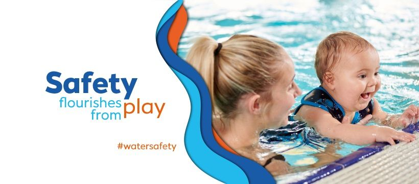

Water Babies
Swimming
Water Babies Ireland offers Ireland’s leading baby and toddler swimming classes, designed to nurture water confidence, safety, and joy from the earliest age. With specially trained instructors and warm, child-friendly pools across Dublin and beyond, Water Babies helps little ones from newborns to preschoolers develop essential life skills while bonding closely with their parents. The gentle, structured lessons are filled with fun, singing, and sensory experiences, making every session a special adventure. Whether you’re looking to start your baby’s swimming journey or continue building their confidence in the water, Water Babies provides a supportive and magical environment for your family.
Address: Multiple Locations
View on Google Maps →
Visit Website
View on Google Maps →